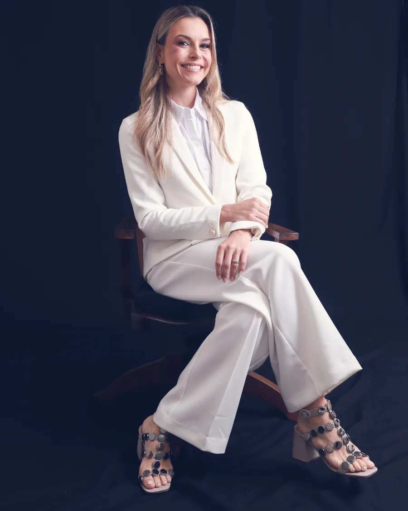
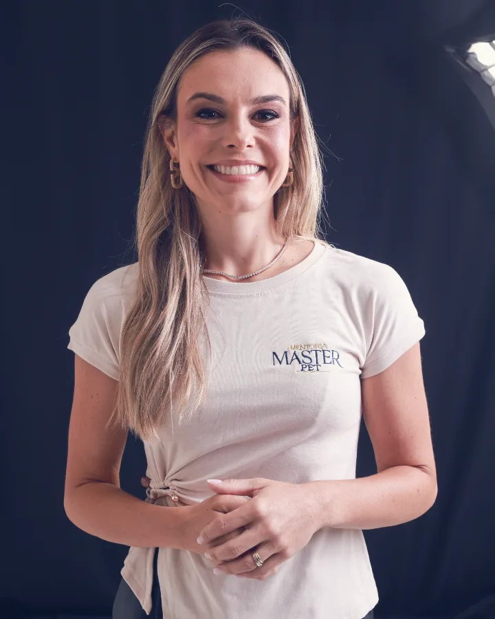
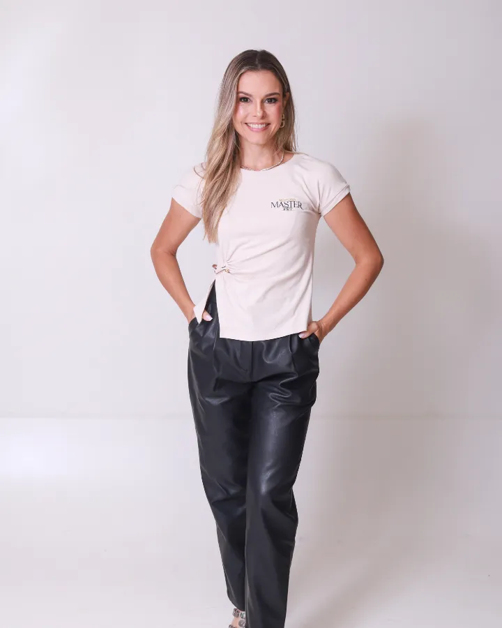
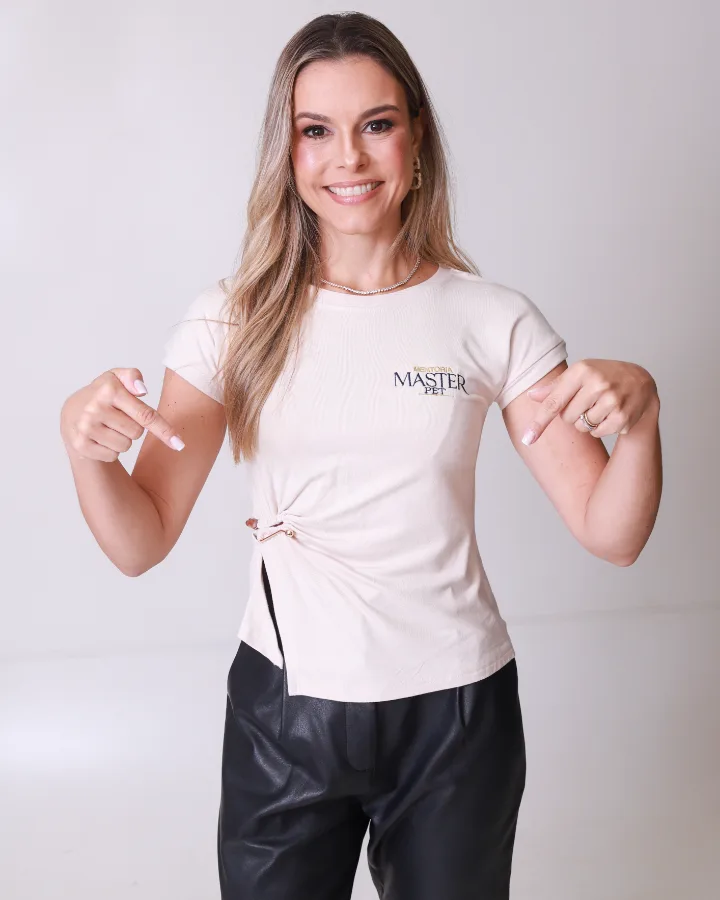
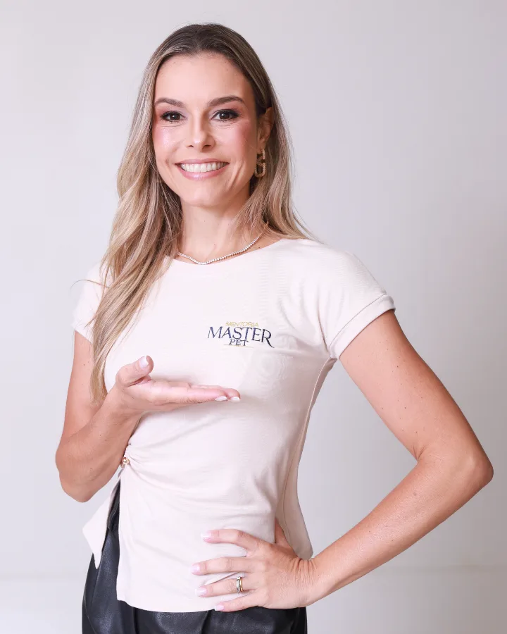

Um banho e tosa que funciona sem depender de você na bancada.
Mentoria online e individual com a Camila Becari. A turma abre no ano que vem. Entre na lista agora e receba o aviso em primeira mão, sem pagar nada.
- Online e individual
- Cerca de 10 encontros de ~2 h provisório
- Abertura: no ano que vem, data a definir
Das 8h às 18h, quem decide tudo é você.
- 08:00
O dia começa na correria
O que é urgente passa na frente do que importa. O plano fica para depois.
- 11:00
Cada um faz do seu jeito
Duas pessoas, dois jeitos. O resultado depende de quem está na bancada.
- 14:00
O preço vira palpite
Sem uma conta clara por trás, cobrar é adivinhar.
- 16:00
Tudo passa por você
Você explica de novo, corrige de novo. E ninguém mais decide.
Onde o seu dia trava?
Escolha o que mais pesa hoje. Nada é enviado: a escolha só pré-seleciona o seu maior desafio no formulário e acende a estação da trilha.
Escolha uma opção ao lado.
Cada resposta acende uma estação da trilha.
Seis estações, feitas com você.
Primeiro entender o seu negócio. Depois montar, junto, o que o sustenta quando você não está. Um encontro individual de cada vez.
Raio-X do negócio
Olhamos o seu negócio como ele é: pessoas, fluxo e números. Você sai com um mapa claro de onde o dia trava.
Gargalos
O que mais pesa vira prioridade, na ordem certa. Menos incêndio, mais direção.
Equipe
Treinamento para que todos atendam com o mesmo cuidado, mesmo sem você por perto.
Precificação, combos e planos
Preço com conta e critério. Combos e planos que fazem sentido para o seu negócio.
Padrões
O jeito de fazer, escrito e combinado. Para não depender de memória, nem de você.
Organização e métodos
Rotina organizada e métodos para manter o que foi implantado.
Do improviso ao processo.
AntesO dia é decidido pela urgência
DepoisO dia segue um plano
AntesCada atendimento sai de um jeito
DepoisPadrão combinado e escrito
AntesPreço por intuição
DepoisPreço com conta e critério
AntesVocê repete as mesmas orientações
DepoisA equipe sabe o que fazer
AntesTudo depende de você estar lá
DepoisO processo funciona sem você na bancada
AntesVocê decide cada detalhe
DepoisCada pessoa decide dentro do combinado
Sem promessa de resultado: a mudança vem de aplicar a trilha no seu negócio.
Gratuito. Você só recebe o aviso da abertura.

Quem vai caminhar com você.
Ao seu lado, no ritmo do seu negócio. frase provisória
- Sócia do Center Vet
- Especialista em banho e tosa
- Referência em atendimento veterinário em Lins/SP


Nem todo mundo precisa disso.
É para você
- Tem um banho e tosa em funcionamento
- Quer organizar processos, preço e equipe
- Topa aplicar os exercícios no próprio negócio
Não é para você
- Quem busca só conteúdo gravado
- Quem ainda não tem banho e tosa
- Quem espera mudança sem aplicar
Três passos. Nenhum pagamento.
Você entra na lista
Nome e WhatsApp, depois algumas perguntas sobre o seu negócio. Leva poucos minutos.
Você recebe o aviso
A Camila ou a equipe chama você no WhatsApp, individualmente. Ninguém é adicionado a grupo sem pedir.
A turma abre
No ano que vem, data a definir. O preço será divulgado na abertura e você decide ali.


Quem entra antes da abertura recebe um convite.
Conteúdo fictício, só para a demonstração. O bônus real será definido pela Camila antes da publicação.
Para quem entrar na lista antes da abertura da turma.
Entrar na lista da turmaO dia a dia, nas palavras de quem aplicou.
Todos os relatos abaixo são fictícios, só para a demonstração. Relato real só entra com autorização por escrito.
Antes eu explicava o mesmo passo três vezes por dia. Hoje está escrito, e a equipe segue.
- exemplo
Parei de decidir o preço no olho. Hoje tem uma conta por trás.
Nome da alunaBanho e tosa · Cidade/UF - exemplo
A equipe passou a atender do mesmo jeito, mesmo nos dias em que não estou.
Nome da alunaBanho e tosa · Cidade/UF - exemplo
Os encontros olharam para o meu banho e tosa, não para um modelo pronto.
Nome da alunaBanho e tosa · Cidade/UF - exemplo
O dia ainda tem correria, mas agora eu sei o que vem primeiro.
Nome da alunaBanho e tosa · Cidade/UF - exemplo
Combinar o padrão por escrito tirou muita conversa repetida da bancada.
Nome da alunaBanho e tosa · Cidade/UF - vídeo · exemplo
Legenda do vídeo · nome, banho e tosa, cidade/UF
Antes de entrar na lista.
Respostas curtas. O que ainda não foi definido está marcado como “a definir”.
No ano que vem. A data será avisada primeiro para quem está na lista.
data a definirO valor será divulgado na abertura da turma. Entrar na lista não tem custo.
a definirNão. A pré-inscrição é gratuita e não obriga a nada.
Os encontros são individuais e online, com a Camila.
detalhes a definirA mentoria é individual: cada negócio é atendido no seu próprio ritmo. O tamanho da turma será definido pela Camila.
a definirAlém dos encontros, há exercícios para aplicar no seu banho e tosa, materiais, acompanhamento e suporte.
detalhes a definirSeu banho e tosa pode andar sem você presa na bancada.
Entre na lista da turma e receba o aviso da abertura em primeira mão.
- Aviso em primeira mão, no WhatsApp
- Contato individual da Camila ou da equipe
- Sem pagar nada para entrar